Chimerax filaments
Tracing filaments in ChimeraX
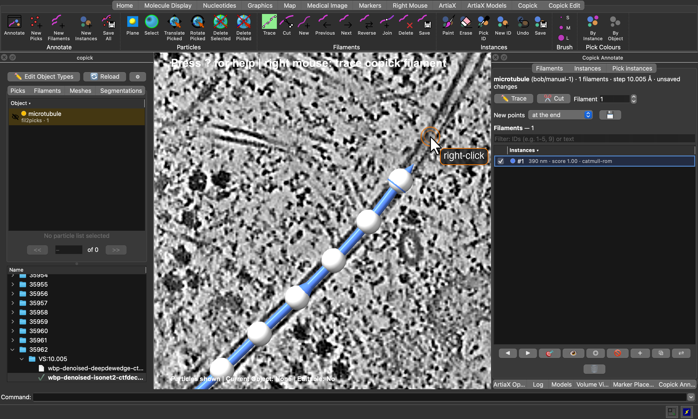
Filaments such as microtubules or actin are annotated by their centreline: an ordered curve through the middle of the
filament, one per filament, each with its own ID. ChimeraX-copick traces them directly on the tomogram: you click
control points along a filament and copick draws a smooth curve through them. The same tools cut, join, reverse and
delete filaments, which makes them just as useful for curating automatic traces, for example those of
copick convert seg2fil.
This tutorial uses the microtubule project from Tracing microtubules with easymode and copick-utils, but any copick project with a tomogram works. It assumes you know how to open a project and a tomogram in ChimeraX-copick; if not, start with the ChimeraX-copick tutorial.
Mouse Required
Control points are placed with the right mouse button. A two-button mouse is strongly recommended.
Step 0: Prerequisites
Filament tracing needs ChimeraX-copick 1.15 or later, which brings copick ≥ 1.28. Install or update it from the ChimeraX command line:
Step 1: Declare a filament object
Only objects declared as filaments can be traced. A filament object is a particle object with a filament specification: its radius is the tube radius, and its polarity says whether the filament has a direction. If your project does not have one yet, click ✏️ Edit Object Types in the copick panel, select the object (or Add New), tick Is Particle and Is Filament, and set the radius and polarity under Filament Properties:
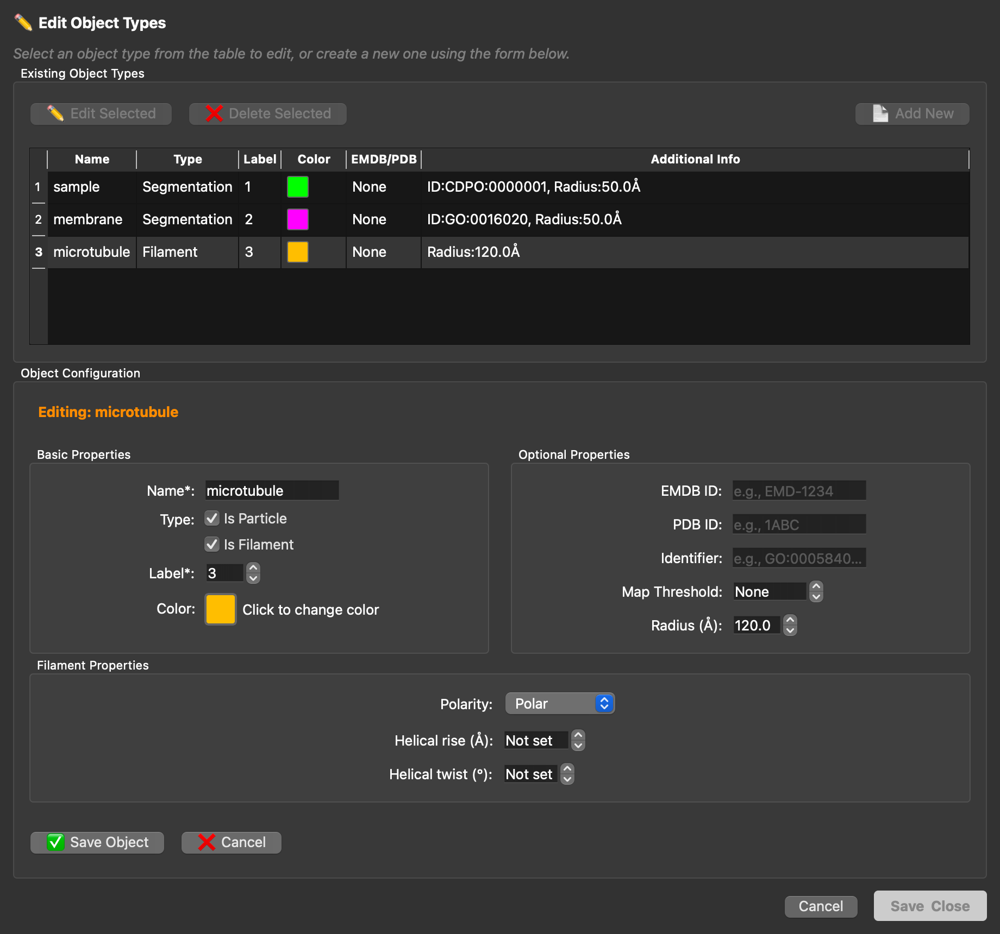
microtubule object declared as a polar filament with a tube radius of 120 Å.From the command line, the same object is created with:
Step 2: Open a tomogram and the Copick Edit toolbar
Start copick with copick start config.json and open a tomogram, for example run 35962. All filament tools live on
the Copick Edit tab of the toolbar:
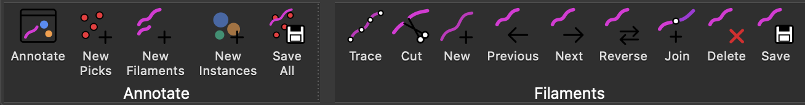
| Button | Action |
|---|---|
| New Filaments | Start a new set of traced filaments |
| Trace | Trace mode: right-click the tomogram plane to add control points, drag them to move, Shift + right-click to remove |
| Cut | Cut mode: right-click a filament to split it in two there |
| New | Start a new filament in the active set |
| Previous / Next | Step through the filaments |
| Reverse | Reverse the active filament |
| Join | Join the selected filaments end to end |
| Delete | Delete the active filament |
| Save | Save the active filament set |
| Annotate | Show or hide the Copick Annotate window |
Step 3: Start a new filament set
Click New Filaments (or 📄 in the Filaments tab of the copick panel). The dialog lists only filament objects; choose a user and a session for the new set:
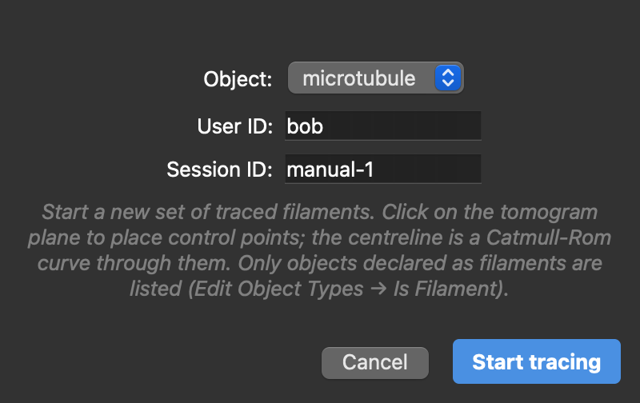
microtubule:bob/manual-1.Start tracing creates the set, switches the right mouse button to trace mode and opens the Copick Annotate window next to the ArtiaX options. The label at the top of the view always shows what the right mouse button does.
Step 4: Trace
Find a filament on the tomogram plane and right-click along it to place control points; the centreline is a smooth (Catmull-Rom) curve through them. Move through the tomogram with Shift + mouse wheel to follow a filament that leaves the plane: new points are placed on whatever plane is shown, including orthoplanes and tilted slabs.
- Move a point: right-click a control point and drag it. The whole drag is one step to undo.
- Remove a point: Shift + right-click it.
- Where new points go: the New points menu in the Copick Annotate window adds them at the end (default), at the start, or between nearest, which inserts a point into the closest segment, for example to refine a curve.
- Start the next filament: New in the toolbar, ＋ in the Annotate window, or N+F.
While you trace, the control points of the active filament are white, and those of the other filaments take their filament's colour. Arrowheads on each tube show the filament's direction, from its first to its last point. For a polar filament such as a microtubule, use Reverse (R+V) if it points the wrong way.
Undo
Every edit is one step on ChimeraX's undo stack: adding, moving and removing points, new filaments, cuts, joins,
reversals and deletions. Undo with Cmd+Z (macOS) or Ctrl+Z and redo with the platform's redo key
(Shift+Cmd+Z on macOS), or use the Edit menu or the undo and redo commands.
Step 5: Join, cut and reverse
Join connects filaments end to end, for example two pieces of one microtubule that you traced separately or that a segmentation broke apart. Select the filaments, either as rows in the Annotate window (Ctrl / Shift + click) or by Ctrl + clicking their tubes in the view (Shift + Ctrl + click adds to the selection); the two stay in sync. Then click ⧉ in the Annotate window, Join in the toolbar, or press J+F. Copick connects the nearest ends, reversing a piece if needed, and the joined filament keeps the ID and direction of the current one.
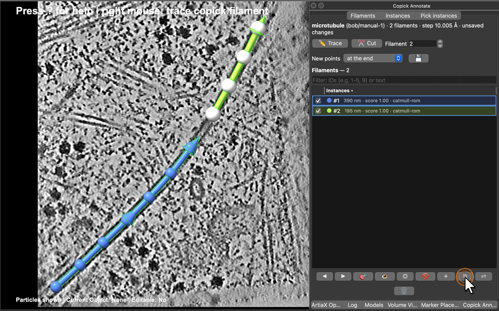
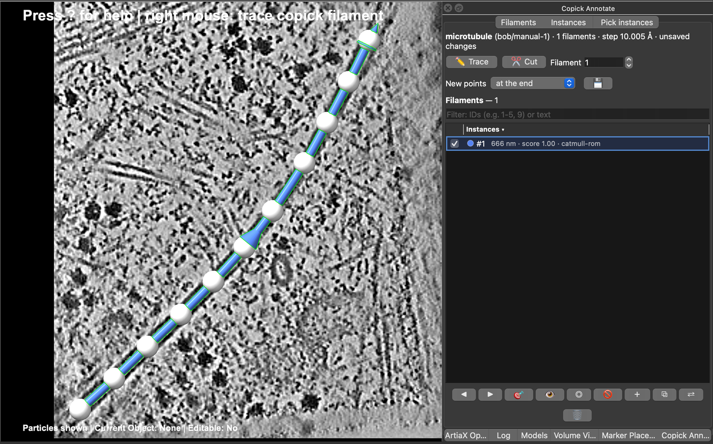
Cut does the opposite. Switch to cut mode with Cut (toolbar or Annotate window) or C+F, and right-click a filament where it should be split. The first piece keeps the filament's ID, the second gets the next free ID, and both keep its direction. Switch back to trace mode with Trace or T+F.
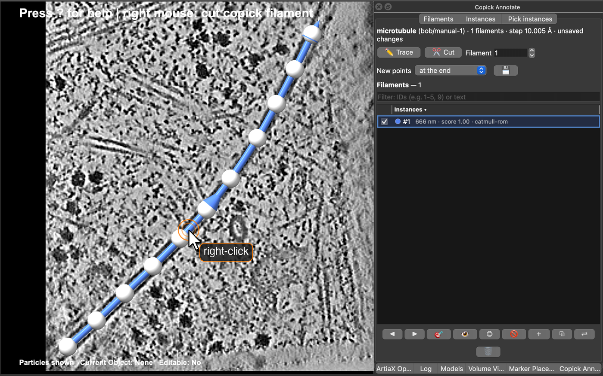
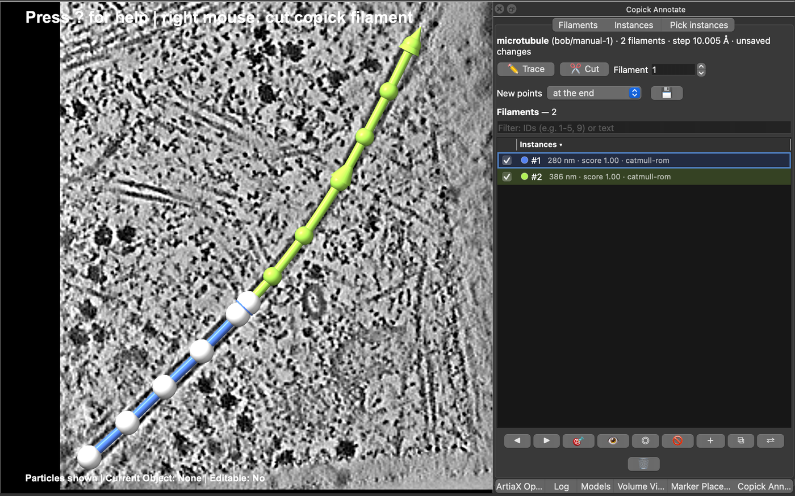
Step 6: Browse the filaments
The Filaments page of the Copick Annotate window lists the filaments of the active set with their length and
score. Click the list header to sort by ID, length or score; the filter box takes IDs (1-5, 9) or text. ◀ ▶ step
through the filaments, 🎯 (or a double-click) centres the view on one, and the checkboxes show or hide them. ⇄
reverses the current filament and 🗑 deletes the selected ones.
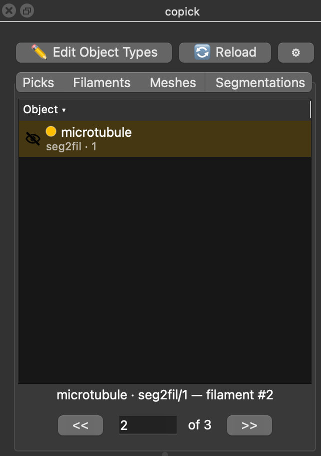
The copick panel has a Filaments tab with all filament sets of the run. Double-click a set to show or hide it, and click a shown set to make it the active one. The stepper below the table walks through the filaments of the active set (F+P / F+N), and typing a number jumps to that filament.
Step 7: Save
Click 💾 in the Annotate window (or Save in the Filaments group of the toolbar) to save the active set. Optionally, copick also writes picks sampled along the filaments at a fixed spacing, oriented along each filament and carrying its ID, for example every 82 Å (one tubulin dimer) for subtomogram averaging:
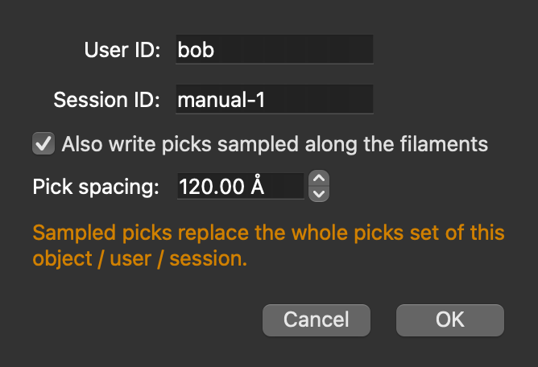
The first save of a new set
Save All in the toolbar (copick save) saves sets that already exist in the project. A new set, or a set
from a read-only tool session (session 0), must be saved once with 💾 or copick filament save, which also lets
you choose the user and session.
Step 8: Curate automatic traces
Filament sets from copick convert seg2fil open like any other: double-click microtubule:seg2fil/1 in the
Filaments tab and click it to make it active. The traces are Catmull-Rom curves, so their control points can be
added, moved and removed like those of a filament traced by hand, and cut and join work as above. Save the result under
a new session so the automatic traces stay as they are.
Filaments stored as B-splines (seg2fil --curve bspline, or traces from copick-utils 1.9) can be moved and cut but not
edited point by point: convert one with → Catmull-Rom in the Annotate window first.
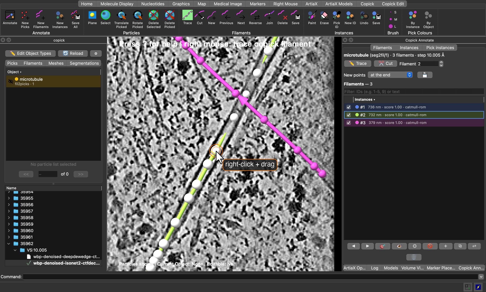
seg2fil in run 35962, with filament #2 active: right-click and
drag one of its control points to move it.Quick reference
Keyboard shortcuts
Two-letter shortcuts are typed in the graphics window; press ? to list them all in the log.
- T+F Trace mode on/off.
- C+F Cut mode on/off.
- N+F Start a new filament.
- F+N / F+P Next / previous filament.
- R+V Reverse the active filament.
- J+F Join the selected filaments.
- X+F Delete the active filament.
- Cmd+Z / Ctrl+Z Undo, Shift+Cmd+Z (macOS) Redo.
Commands
| Command | Description |
|---|---|
copick new filaments microtubule userId bob sessionId manual-1 |
Start a new filament set |
copick open filaments microtubule:seg2fil/1 |
Show a filament set |
copick filament trace on |
Trace mode (off, toggle) |
copick filament cut on |
Cut mode (off, toggle) |
copick filament cut at x,y,z |
Cut the nearest filament at a point (Å) |
copick filament new |
Start a new filament |
copick filament next / previous |
Step through the filaments |
copick filament go 3 |
Make filament 3 active and centre it |
copick filament join 1,2 target 1 |
Join filaments 1 and 2 into 1 |
copick filament reverse |
Reverse the active filament |
copick filament delete |
Delete the active filament |
copick filament convert |
Convert the active filament to Catmull-Rom |
copick filament save sessionId manual-2 pickSpacing 82 |
Save the set, with picks every 82 Å |
copick annotate show page filaments |
Show the Copick Annotate window |